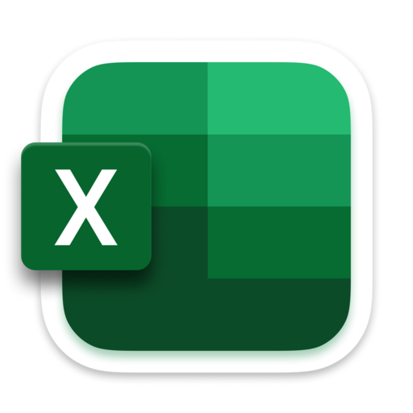

☰
Cursos de Informática Básica Para melhor Idade
Início
Sobre Nós
Nossos Cursos
Contato
CADASTRE-SE
JÁ SOU ALUNO(A)
EXCEL

Qual recurso do Excel permite revisar e acompanhar modificações feitas em uma planilha?
Classificação
Filtro
Controlar Alterações
Macro
Qual recurso do Excel permite revisar e visualizar alterações feitas em uma planilha?
Classificação
Controlar Alterações
Filtro
Macro
Qual atalho salva rapidamente uma planilha no Excel?
Ctrl + P
Ctrl + C
Ctrl + X
Ctrl + S
Qual recurso do Excel permite visualizar alterações feitas em uma planilha?
Controlar Alterações
Classificação
Filtro
Macro
Qual função do Excel permite somar um conjunto de valores?
MÉDIA()
SOMA()
MÁXIMO()
CONT.SE()
Como inserir gráficos em uma planilha do Excel?
Inserir → Gráfico
Página Inicial → Fonte
Fórmulas → Funções
Revisão → Comentário
Qual guia contém opções de formatação como fonte, cor e tamanho do texto?
Inserir
Fórmulas
Página Inicial
Revisão
Como inserir cabeçalhos e rodapés em uma planilha?
Revisão → Ortografia
Inserir → Cabeçalho/Rodapé
Página Inicial → Estilo
Exibir → Zoom
Qual recurso permite verificar e corrigir erros de digitação no Excel?
Classificação
Gráficos
Colunas
Verificação ortográfica
Qual atalho copia o conteúdo de uma célula selecionada?
Ctrl + S
Ctrl + X
Ctrl + C
Ctrl + V
🎉 Fim do Quiz! 🎉